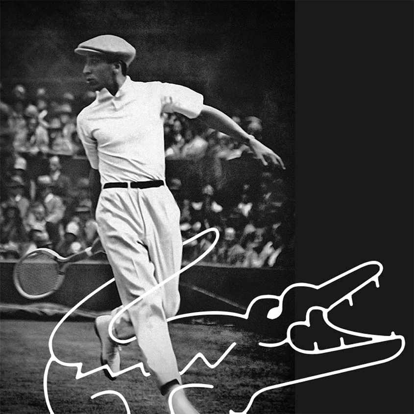

HISTORY OF LACOSTE

Boston, 1923. Young tennis prodigy René Lacoste is 19 and likes a challenge. His team captain promises him the crocodile leather suitcase the player admired in a store window if he wins his upcoming match. René doesn’t win but he had the determination of the crocodile on court, which is why an American journalist gave him this nickname.